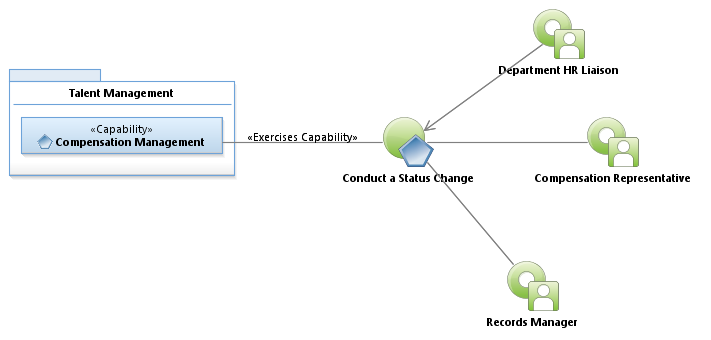
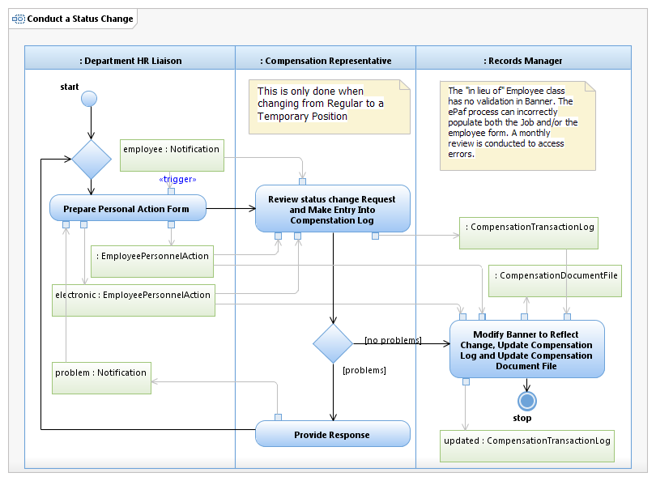

Use Case Model: Conduct a Status Change
Architect: Aaron Brown, IT Enterprise Architect Senior
Date Last Modified: 2/14/2013
User Review: Holly Moyer, Tommy Tucker
Date: 2/14/2013
A status change occurs when an employee moves from Regular position to a Temporary position. These changes effect the employees leave and medical benefits. This may include changing the type of employee (temporary, regular), benefit changes, staffing level changes, and employee class changes, leave category, salary grade, salary group, leave accrual, title, pay grade, location code, funding, department, seniority date, job effective date, personnel date, job begin date, work week, FTE, etc. The "in lieu of" employee class has no validation in Banner. The electronic personnel action form (ePAF) process can incorrectly populate both the Job and/or the employee form. A monthly review is conducted to assess errors.
Follow link to Role Definitions

Use Case Model: Conduct a Status Change

Activity Model: Conduct a Status Change
Activity Documentation
| Activity | Documentation |
|---|---|
| Prepare Personal Action Form | The Department HR Liaison has been instructed by management or appropriate leadership, that a job reassignment should take place. The Business Case Letter includes the position title. The Liaison provides the Class and Job codes on the Personal Action form. The "Reassignment" box is checked on the P.A.F. |
Note: When the activity is self explanatory no documentation is provided.